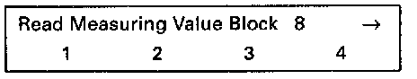
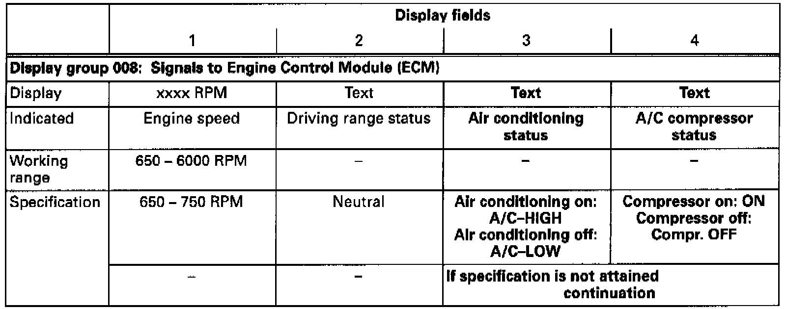

A/C Signal: Testing and Inspection
Special tools, testers and auxiliary items- VAG 1551/1552 scan tool with VAG 1551/3 adapter cable.
- VAG 1598/18 test box.
- Multimeter (Fluke 83 or equivalent).
- Connector test kit VW 1594.
- Wiring diagram.
Check conditions:
- Function of A/C OK.
- A/C switched off.
- Interior of vehicle is at room temperature (above 15°C (59°F)).
- No malfunctions stored in DTC memory See checking DTC memory. Testing and Inspection
Test sequence:
- Engine running at idle.
- Connect VAG 1551/1552 scan tool and select "Engine Electronics" address word 01. Testing and Inspection

Indicated on display
- Press buttons -0- and -8- to select "Read Measuring Value Block" function 08 and press -Q- button to confirm input.

Indicated on display
- Press buttons -0-, -0- and -8- to input display group 008 and press -Q- button to confirm input.

Indicated on display (1-4 = Display fields)
- Switch on A/C (lowest temperature and highest blower speed).
- Check specifications for A/C (display fields 3 and 4).

NOTE:
The A/C compressor will be switched off (Compr. OFF) when the ECM recognized full load and the air conditioning is switched on (A/C-HIGH).
Continuation:
If the display does not indicate as described:

- Connect VAG 1598/18 test box to ECM wiring harness (arrow).
- Check wiring between test box sockets 37 and 39 respectively and A/C for open circuit according to wiring diagram.
Resistance: max. 1.5 ohms.
If the specification is not attained:
- Check wiring according to wiring diagram.